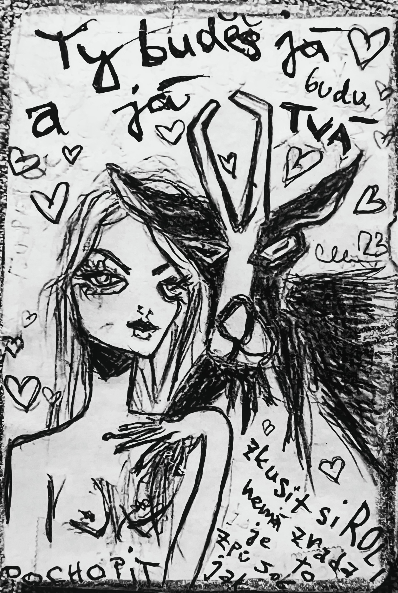

Kozel
Ty budeš já a já budu tvá. Zkusit si roli není zrada. Je to způsob, jak pochopit.
Ty budeš já a já budu tvá
Zdrojový text je zachován. Text a obraz jsou vedené jako figura a pozadí jednoho fenoménu; oddělené měření jednotlivých modalit je pouze technická příprava, nikoli rozdělení významu.
Zdrojová karta
ACelý původní text
Zdrojové úseky
Úseky jsou rozdělené podle původních odstavců a oddělovačů v souboru. Nejde o autorské interpretace ani o nově dopsané významy.
První lexikální měření
Transparentní baseline TF‑IDF (slovní výskyty) a kosinová vzdálenost. Není to neuronový embedding ani sémantické porozumění.
APodobnost a matice vzdáleností
Menší vzdálenost znamená větší slovní překryv v této reprezentaci. Neznamená automaticky stejný význam.
BTopologie · spojování komponent H0
Úseky spojujeme od nejmenší vzdálenosti. Sledujeme, v jakém pořadí se oddělené komponenty propojí.
CCo tato čísla neumí říct
TF‑IDF zachycuje hlavně sdílená slova a slovní vazby. Nezachycuje spolehlivě metaforu, ironii, obrazovou kompozici ani vztah mezi tím, co text říká a co ilustrace ukazuje.
Skutečné textové a obrazové embeddingy doplníme jako samostatnou další vrstvu až po výpočtu konkrétním multimodálním modelem.
Figura a pozadí
Text a ilustrace patří k jedné kartě. Význam se nemá zredukovat na text plus samostatný obrázek, ale zkoumat také vztah mezi nimi: co je ve figuře, co tvoří pozadí, co se potvrzuje, co se rozchází a co vzniká teprve v jejich mezeře.